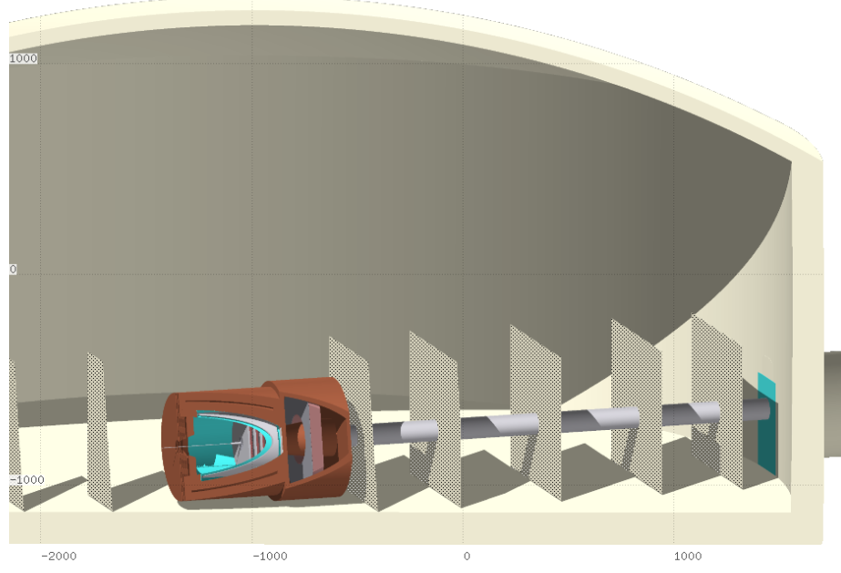
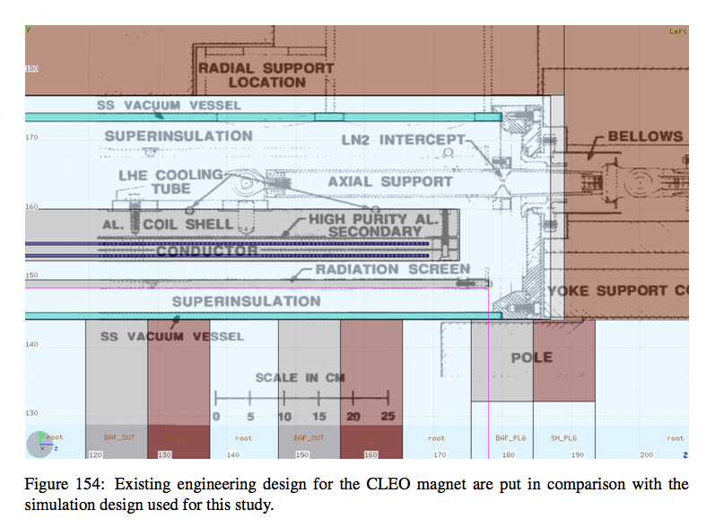
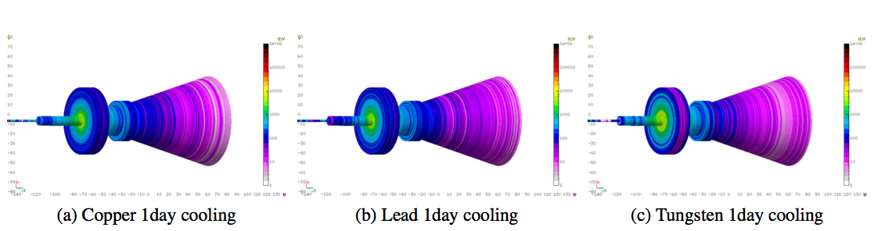
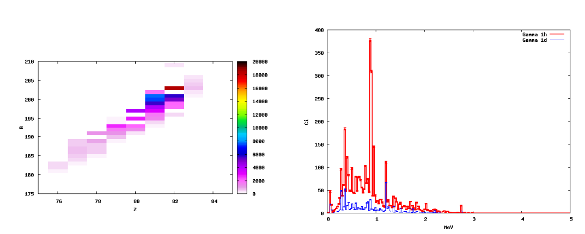
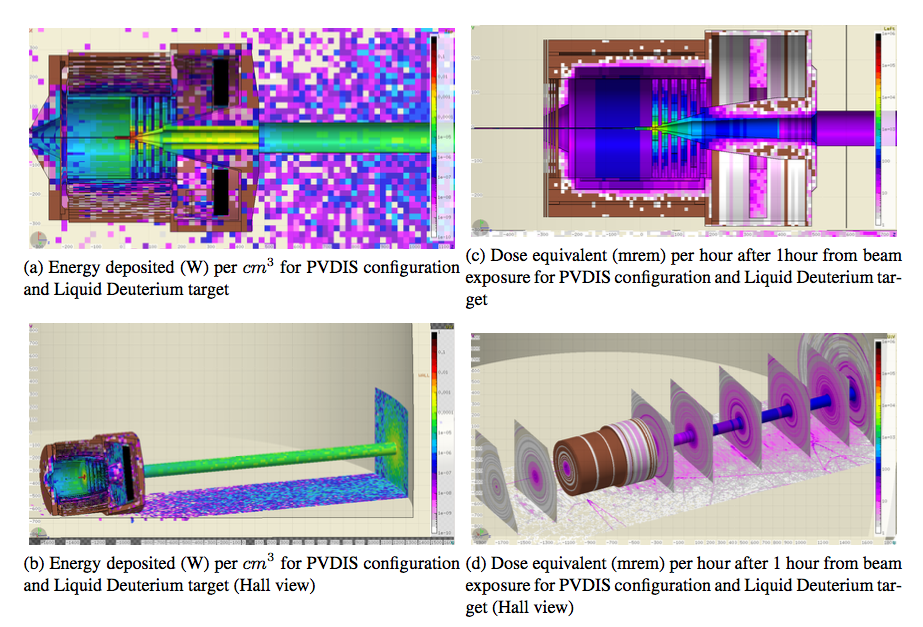
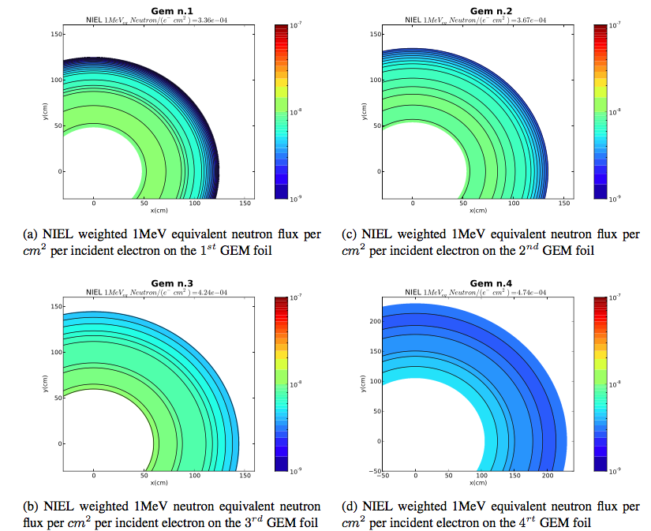

This presentation was build for latest Chrome or Safari browser.
You are viewing simplified view, but most of the CSS 3D will not work for you, sorry.
Implementation
ofdifferent
simulation packages
forradiation estimates at Jlab
by
Lorenzo Zana zana@jlab.org
The University of Edinburgh
Fluka simulation
PREX collaboration
- Activation studies on the surrounding of the target
- Model of the Full Hall-A with Arms and target environment
- Full simulation with magnetic field in FLUKA
- Possibility of input spectrum as source beam
Activation studies of area surrounding the target
- PREX II early studies (not final design)
- dose in $\left(\frac{mrem}{h}\right)$

Model of Full Hall-A

Fluka simulation
SoLID collaboration
- Responsible for Radiation and activation studies for the collaboration
- Passed scrutiny of different panels for internal review
- Defended the project in front of an international panel at the Director Review
- Answered all the question arised from the different panels in the latest version of the document (here the official document my contribution from page 180)
SoLID in Full Hall-A

SoLID comparing with design (here the CLEO coil)

SoLID activation in first baffle (different materials)
dose in $\left(\frac{mrem}{h}\right)$

SoLID activation in first baffle
- on left Residual Nuclei for Lead Target after 1hour cooling (Z vs A)
- on right $\gamma$ spectrum in Curie at 2 different cooling times

Activation study with SoLID
- power deposited
- dose in $\left(\frac{mrem}{h}\right)$

GEANT4 simulation
PREX collaboration
- Simulation
- 1MeV neutron equivalent studies for radiation inside the Hall
- Model of the Full Hall-A with Arms and target environment
PREX: Vertex 1MeV equivalent radiation

PREX: Direction 1MeV equivalent radiation

GEANT4 simulation
SoLID collaboration
- 1MeV equivalent neutron radiation on GEM
SoLID radiation on GEM
- 1MeV equivalent neutron radiation on GEM

FLUKA + GEANT4
Sometimes it is important to use both simulation to reach your result
- For example if you need to determine the activation from a part of equipment that is in proximity to anhighly activated material
- This was the case for PREX where one wanted to determing the activation of the materials in proximity of the highly activated collimator
- FLUKA is the best program for activation studies, but lacks the possibility to remove some material at a later time for activation purposes
FLUKA + GEANT4
- The material in question of this study was the attachment surrounding the collimator
- Fluxes on the material was determined using GEANT4, since there was direct line on sight from the target (where GEANT4 gave more accurate description of the neutron fluxes)
FLUKA + GEANT4
The flux has been characterized, depending on:
- Particle id ($e^-,e^+,n,p,\gamma$)
- Place of intersection with the Scattering Chamber Attachment surface
- Angle of intersection and energy spectrum
Information is then used in FLUKA simulation for activation studies
- Can be used together to give a single answer
- Each particle contribution could be studied separately for improve shielding design to mitigate activation
FLUKA + GEANT4
- TOGETHER: Comparison of different materials

FLUKA + GEANT4
- SEPARATE: Comparison $\gamma$(left) vs neutron(right)